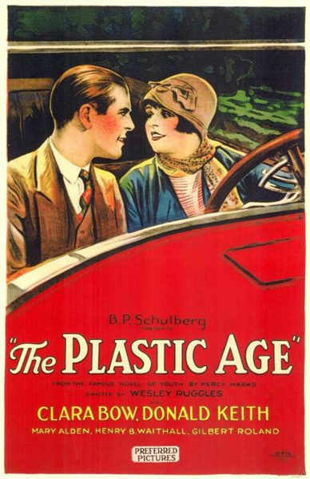

The Plastic Age
Starring: Clara Bow, Donald Keith, Gilbert Roland
Director: Wesley Ruggles
Writer: Frederica Sagor Maas, Eve Unsell
Producer: B. P. Schulberg
The Plastic Age is a 1925 American black-and-white silent romantic comedy film directed by Wesley Ruggles and starring Clara Bow, Donald Keith, and Gilbert Roland. The film was based on a best-selling novel from 1924 of the same name, written by Percy Marks, a Brown University English instructor who chronicled the life of the fast-set of that university and used the fictitious Sanford College as a backdrop.
Watch Online: Internet Archive
Trivia
- Based on The Plastic Age (novel by Percy Marks).
- The Plastic Age was based on the 1924 novel of the same name, which was written by Brown University professor Percy Marks, a popular novelist at the time.
- Marks' novels were based on his students, the 'flaming youth in rebellion' of the twenties, who danced to wild jazz, drank from silver flasks, and had petting parties.
- Benjamin Percival Schulberg, the CEO of Preferred Pictures (a film studio and film distributor, as well as an actors agency), outbid all the major and minor studios for the rights to The Plastic Age; Schulberg paid $35,000 for the copyrights to the novel.
Filming Locations
- The Plastic Age was filmed in the summer of 1925, at both Pomona College, located in Claremont, California, and in Hollywood, at the FBO Studios, the production company owned and operated by Joseph P. Kennedy, the wealthy Boston, Massachusetts banker/stockbroker patriarch of the Kennedy family.
Previous Showings
1 Run • 1 Festival
All runs on record (1):
- August 9, 2000Summer 2000w/ It